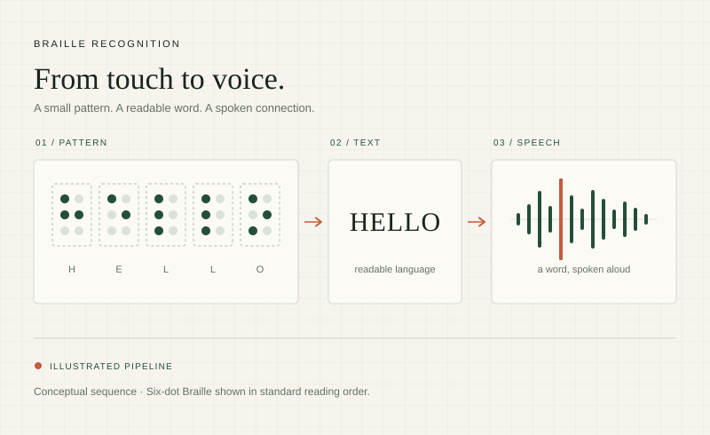

COMPUTER VISION / ACCESSIBILITY01 AI4ALL IGNITE · TEAM PROJECT
From Braille
to text and speech.
A computer vision pipeline that detects Braille cells, recognizes characters, and turns an image into readable text and speech.
My focus Training and evaluating a YOLO11n detector and an EfficientNet-B0 character classifier.
96.15%Detection mAP@50
99.41%Classifier test accuracy
Separate stage metrics from my experiment; combined character F1: 87.75%.
Inside the project
Detections are arranged in reading order, translated with Liblouis, and converted to audio with Piper. The Streamlit interface supports hosted Roboflow detection or local YOLO weights.
The combined experiment recognized 10,163 of 10,443 ground-truth characters. Additional false-positive detections lowered precision, making pipeline evaluation an important part of the work.
Read the experiment results ↗